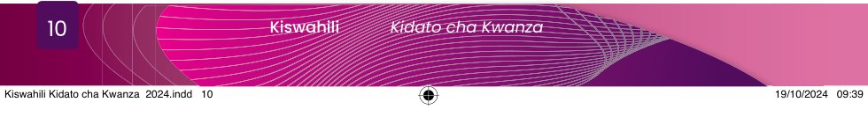

Kwa kweli, hayo ni mawazo potofu. Tuelewe kuwa lugha ya Kiswahili nchini Tanzania hutumika kufundishia masomo yote katika shule za msingi na vyuo vya ualimu vinavyotumia Kiswahili kama lugha ya kufundishia. Pia, Kiswahili hufundishwa kama somo katika elimu ya sekondari, vyuo vya kati na vyuo vikuu. Hii ina mchango mkubwa sana kwa wajifunzaji kwani inawasaidia kuwa mahiri katika lugha ya Kiswahili.
Ndiyo. Lugha ya Kiswahili inatumika kuwaunganisha Watanzania wote. Tanzania inakadiriwa kuwa na watu zaidi ya milioni sitini wenye makabila tofauti lakini wanaunganishwa na lugha ya Kiswahili katika mawasiliano yao. Aidha, Kiswahili kinachangia katika kukuza uchumi, amani, na utulivu nchini Tanzania na katika nchi za jirani. Isitoshe, wakati wa kupigania uhuru, lugha ya Kiswahili ilitumika kama chombo muhimu cha umoja na mawasiliano.
Ndiyo ndugu mwandishi. Lugha ya Kiswahili ni lugha rasmi pia. Inatumika katika shughuli mbalimbali za kielimu, kiuchumi na kiserikali katika taasisi na vyombo vya dola kama vile mahakama na bunge. Vilevile, Kiswahili kama lugha ya taifa hutumika kama utambulisho wa taifa letu. Kwa hiyo, Kiswahili kina nafasi kubwa katika nyanja zote za maendeleo ya taifa.
Kiswahili kimepata hadhi ya kutumika kimataifa. Hadhi hii imekifanya Kiswahili kuwa lugha pekee ya Kiafrika iliyotambuliwa na Shirika la Umoja wa Mataifa la Elimu, Sayansi na Utamaduni (UNESCO) na kupewa siku maalumu ya tarehe 07/07 ya kila mwaka kuwa siku ya Kiswahili duniani. Aidha, hii ndiyo lugha pekee ya Kiafrika ambayo imesambaa zaidi kuliko lugha zingine. Hivyo, imefanikiwa kwa kiasi kikubwa kuleta umoja barani Afrika. Vilevile, Kiswahili ndiyo lugha pekee ya Kiafrika iliyopendekezwa kutumika katika vikao vya Umoja wa Afrika sanjari na lugha zingine za kimataifa. Aidha, Kiswahili kinatumika kama lugha rasmi katika Jumuiya ya Maendeleo Kusini mwa Afrika (SADC) na Jumuiya ya Afrika Mashariki (EAC).
